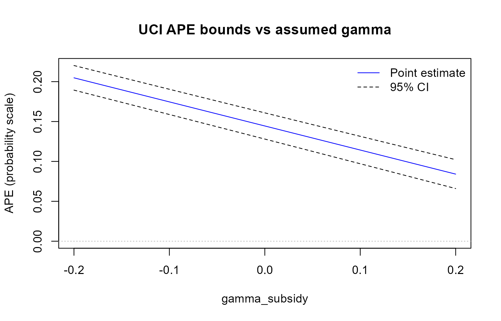

This page runs a first analysis of the example data with the R package. The Stata version runs the same analysis on the same file and prints the same numbers.
Install
# install.packages("remotes")
remotes::install_github("jespernwulff/apexog")The data and the question
library(apexog)
data(promotion)
head(promotion)
#> promoted training subsidy tenure manager team
#> 1 1 0.9491479 0.6783543 -0.05001258 1 1
#> 2 0 -1.8055899 -0.5502532 0.41027855 0 1
#> 3 1 0.6138707 1.9867796 -0.94545542 1 1
#> 4 0 0.2335291 0.3441532 -0.24339041 0 1
#> 5 0 -0.8340101 -0.0679724 0.03047361 1 1
#> 6 0 -2.0843340 -1.4783819 -1.59398557 1 1The data are simulated (see ?promotion). The outcome
promoted is binary. Hours of training are
endogenous: employees choose training partly on an unobserved ability
that also drives promotion. A training subsidy shifts
training and serves as the instrument; tenure and
manager are controls.
The instrument is only plausibly excluded. A subsidy might affect promotion directly, for instance by signalling that the firm values the employee. apexog asks how much such a direct effect, γ, would change the average partial effect (APE) of training on the probability of promotion.
A range for the violation: uci
The formula holds the outcome and the exogenous controls;
endog holds the endogenous regressor and its instrument.
Here the direct effect of the subsidy is assumed to lie between −0.10
and 0.10 on the latent index:
fit <- apexog(promoted ~ tenure + manager, endog = training ~ subsidy,
data = promotion, method = "uci",
gmin = -0.10, gmax = 0.10, grid = 11, verbose = FALSE)
fit
#> ------------------------------------------------------------------------------
#> Plausibly-exogenous APE bounds (CHR 2012, UCI method)
#> Estimator: cfprobit | First stage: linear | SE: Murphy-Topel | N = 4000
#> Endogenous: training
#> Target: APE of training
#> ------------------------------------------------------------------------------
#> Baseline (gamma = 0):
#> APE(training) = 0.144457 (SE 0.008376) [0.128040, 0.160874]
#>
#> Scale: 1 latent-index unit of gamma = 0.2091 pr. points per unit of Z (avg., baseline)
#> 1 structural-latent unit of gamma = 1.1986 latent-index units (sigma_tilde = 0.8343)
#>
#> UCI union over gamma grid (11 point(s) per instrument):
#> gamma_subsidy range: [-0.1000, 0.1000] exact Pr scale: [-0.0209, 0.0209]
#>
#> APE(training) bounds = [0.097095, 0.190449]
#> ------------------------------------------------------------------------------The output has three parts.
-
Baseline: the APE with a valid instrument
(γ = 0), its standard error and confidence interval. With a
linear first stage this is the estimate that
cfprobitfollowed bymargins, dydx(training)gives in Stata. The standard error is the Murphy–Topel two-step standard error, which accounts for the estimated first-stage residual in the main probit. - Scale: what one unit of γ on the latent index means. Here it changes the probability of promotion by 0.209, or 20.9 percentage points, per unit of the subsidy, on average; the second line converts to the structural latent scale. See Which scale for the violation?.
- UCI union: the union of the 95% confidence intervals over the eleven values of γ in the range, and the same range expressed on the exact probability scale. The APE lies between 0.097 and 0.190 for any violation in the range: the effect of training stays positive.
The usual extractor functions work. coef() and
vcov() return the baseline estimate and its variance,
confint() the bounds:
The estimate and confidence interval at every point of the grid are
in fit$grid:
head(fit$grid, 3)
#> g_subsidy est_training lo_training hi_training
#> 1 -0.10 0.1746299 0.1588106 0.1904491
#> 2 -0.08 0.1685953 0.1526714 0.1845191
#> 3 -0.06 0.1625607 0.1465245 0.1785968plot() draws them. A wider range makes the point: the
APE falls as the assumed direct effect of the subsidy grows, but within
±0.20 the lower bound never reaches zero.
wide <- apexog(promoted ~ tenure + manager, endog = training ~ subsidy,
data = promotion, gmin = -0.20, gmax = 0.20, grid = 21,
verbose = FALSE)
plot(wide)
A prior for the violation: ltz
Instead of a hard range you can give a prior. Here γ is normal with mean 0 and variance 0.0025 (standard deviation 0.05):
ltz <- apexog(promoted ~ tenure + manager, endog = training ~ subsidy,
data = promotion, method = "ltz", mu = 0, omega = 0.0025,
iterations = 1000, seed = 101, verbose = FALSE)
ltz
#> ------------------------------------------------------------------------------
#> Plausibly-exogenous APE bounds (CHR 2012, LTZ method, gaussian prior)
#> Estimator: cfprobit | First stage: linear | SE: Murphy-Topel | N = 4000
#> Endogenous: training
#> Target: APE of training
#> ------------------------------------------------------------------------------
#> Baseline (gamma = 0):
#> APE(training) = 0.144457 (SE 0.008376) [0.128040, 0.160874]
#>
#> Scale: 1 latent-index unit of gamma = 0.2091 pr. points per unit of Z (avg., baseline)
#> 1 structural-latent unit of gamma = 1.1986 latent-index units (sigma_tilde = 0.8343)
#>
#> LTZ prior:
#> gamma_subsidy ~ N(0.0000, 0.0025)
#> exact Pr scale of the draws: mean -0.0004, sd 0.0100
#> iterations = 1000
#>
#> LTZ 95% interval (sampling noise convolved with the prior; CHR 2012 eq. 7):
#> APE(training) 95% CI = [0.112442, 0.177756]
#>
#> Prior-only spread of the point estimates (sensitivity band, no sampling noise):
#> APE(training) 95% range = [0.116818, 0.172106]
#> ------------------------------------------------------------------------------apexog draws γ 1,000 times, refits the model at every draw
and adds each refit’s sampling noise to its estimate (Conley, Hansen and
Rossi 2012, eq. 7). The 95% CI is the percentile
interval of those draws: a confidence interval that accounts for both
the uncertainty about γ and the sampling uncertainty. The
prior-only range shows how far the point estimate moves
across the prior alone; it is narrower, because it ignores sampling
noise. plot(ltz) shows the distribution of the draws.
R and Stata use different random-number generators, so the two LTZ
intervals agree only up to simulation error. To reproduce a Stata run
exactly, pass its draws, e(gamma_sim), as
draws.
The violation in probability points
It is often easier to think about the direct effect of the instrument
on the probability of the outcome than about a coefficient in the latent
index. With gunits = "pr" every value of γ you
give is read as a change in the probability per unit of the instrument
(0.02 is 2 percentage points). Here the subsidy’s direct effect on the
probability of promotion is at most 2 percentage points per unit:
pr <- apexog(promoted ~ tenure + manager, endog = training ~ subsidy,
data = promotion, gunits = "pr",
gmin = -0.02, gmax = 0.02, grid = 11, verbose = FALSE)
confint(pr)
#> lower upper
#> training 0.0984383 0.1891642apexog converts the range to the latent index (dividing by the average density 0.209 from the baseline fit) and reports, beside it, the exact probability-scale value of each refit. The bounds are close to those for ±0.10 on the latent index, because a probability change of ±0.02 is about ±0.096 index units.
Clustered standard errors
The employees work in 200 teams. cluster gives
cluster-robust standard errors throughout, in the first stage, the main
probit and the two-step correction:
Next steps
- A binary treatment, or an interaction of an endogenous treatment with a moderator: Binary treatments and interaction effects.
- How to choose between the range and the prior, and their settings: Union of intervals or a prior?
- Every argument:
?apexog.